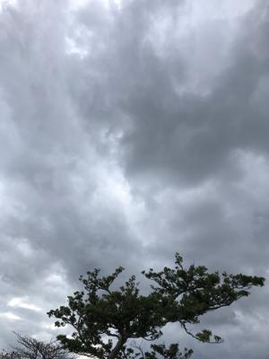
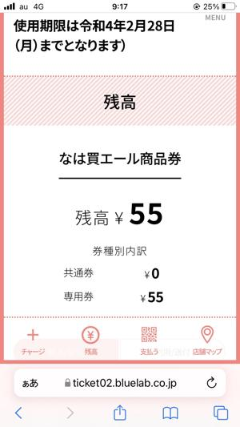
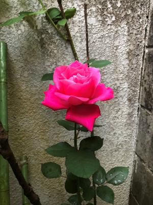

うるがいの話 ある日
最新: 想定外【うるがいの話 ある日】とは 一日だけのプログです
『うるがいの話』の最新一日だけのプログで、通信料が少なく経済的だ。カニの画像をクリックすると全ての日付が載る『うるがいの話』サイトを表示します
|
|
【うるがいの話】 うるがい(ｳﾙｶﾞｲ urugai)とは、『もずくがに』の名前でとても大きくなります。 |
|---|---|
|
|
【カミマヤーの話】 猫のことを方言でマヤーといいます。カミマヤー（kamimayaa）とは、神の猫のことです。 |
|
【たながぁの音楽】 たながぁ（ﾀﾅｶﾞｰtanagaa）とは手長えびのことで、何種類かあり大きいのは車 エビぐらいになります。 |

|
【ぶながぁの話】 ぶながー(bunagaa)とは、赤い髪の毛、赤い身体、そして身長は１ｍ２０ｃｍ ぐらい、川の蟹を食べているの目撃された。場所は沖縄県国頭郡大宜味村のと ある村僕の隣近所に住んでいる爺さんから、聞いた話です。 |
|
|
【ギーマの話】 ギーマ(giima)とは、山原の里山に咲くスズランに似た、 花を付けます。実は食べられます、 気が付くと口の周りが紫になっています。 |
2022年02月25日 (金）想定外
21:54
 
１９８８年製作の映画トムクルーズ主演の『カクテル』で、バスでニューヨー
クへ行くシーンで２００１年に倒壊したワールドトレードセンター、１９７９
年製作の『戦国自衛隊』では、福島第一原子力発電所は写し出されていた。正
気とは思えないプーチンが、ウクライナの首都キエフまで陥落させようとして
いる。これまで想定していなかった出来事が、いろいろ起きている。

昨日の午前に病院から連絡があり、ヨメのお母さんは今日の１０時に退院予定
だった。ところが、夕方、吐き気がまた収まらず、検査をすることと、圧迫骨
折の処置としてコルセットを・・、で結局週明けに変更になった。その後、ヨ
メは介護包括支援センターの人などと話をする、今の状態では一人で暮らすに
は不安なので、一カ月ほどリハビリのため施設に入れたらと勧められる。どう
なることやら。
なは買エール商品券の利用期限が迫っている、専用券の５５円が残っていたが
パン屋で使い果たす、パンもガソリンも値上がりしていくのだろうな。
１８時４９分 ビットコインの総資産 ￥１２、７９２↑